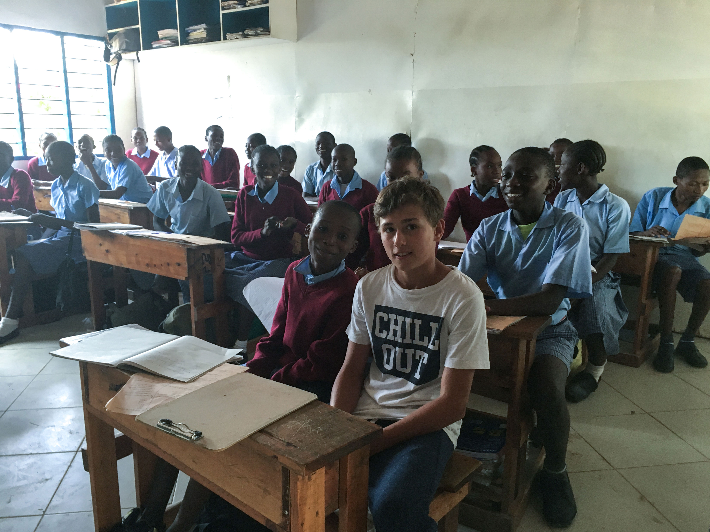

Am 1. April 2008 kaufte Gabriela Vonwald am Rande des Ortes Kilifi ein Grundstück und begann, zunächst
ausschliesslich mit eigenem Geld, mit dem Bau einer Schule für Kinder, die ansonsten keine Chance auf einen
Schulbesuch haben würden. Seitdem ist viel passiert und es gibt noch viel zu tun.
Über 600 Kinder
Mehr als 600 Kinder (Kindergarten bis Secundary , 20 Klassenzimmer, eine Küche, ein Speisesaal, 2
WC-Anlagen,
eine Bibliothek
Die Kinder erhalten 2 Mahlzeiten am Tag und alle notwendigen Bücher und alle notwendigen Schul-Utensilien
Alle laufenden Kosten werden dadurch finanziert, dass jedes Kind einen Paten/eine Patin in Europa hat, die
den
Schulbesuch ermöglicht.
Der Bau der Schule wurde über Extraspenden und eigenes Geld von Frau Vonwald finanziert.

Nachhaltige Philosophie
Keine Arbeitslosen produzieren die lesen und schreiben können
Kleine Klassen für kenianische Verhältnisse (normalerweise sind bis zu 100 Kinder in einer Klasse)
Gute Bücher und Schulunterlagen
2 Mahlzeiten pro Tag fördern die Lernleistung
Pensionierter Beamte aus dem Unterrichtsministerium der als Berater tätig ist und die Lehrpersonen laufend
trainiert
Zusätzliche, freiwillige Unterrichtsveranstaltungen wie Taekwando, Chor, Theatergruppe, Boy-Band mit HipHop,
klassische Tänze, künstlerisches Arbeiten, Volleyball, Pfadfinder
Den Familien ein Menschenwürdiges Leben ermöglichen durch: